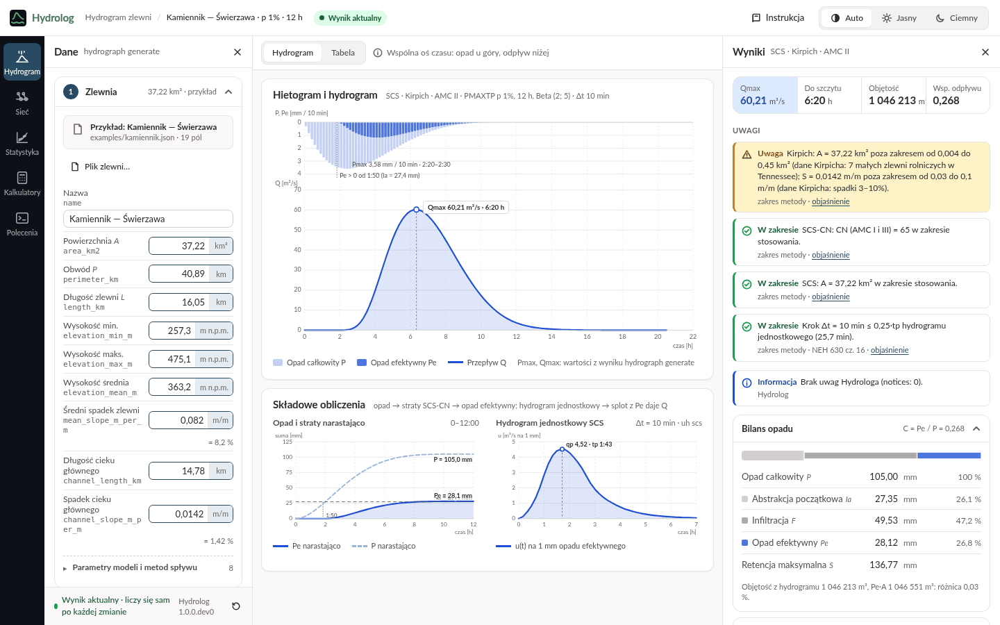
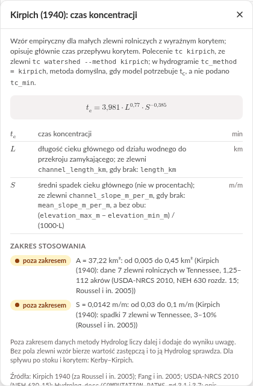
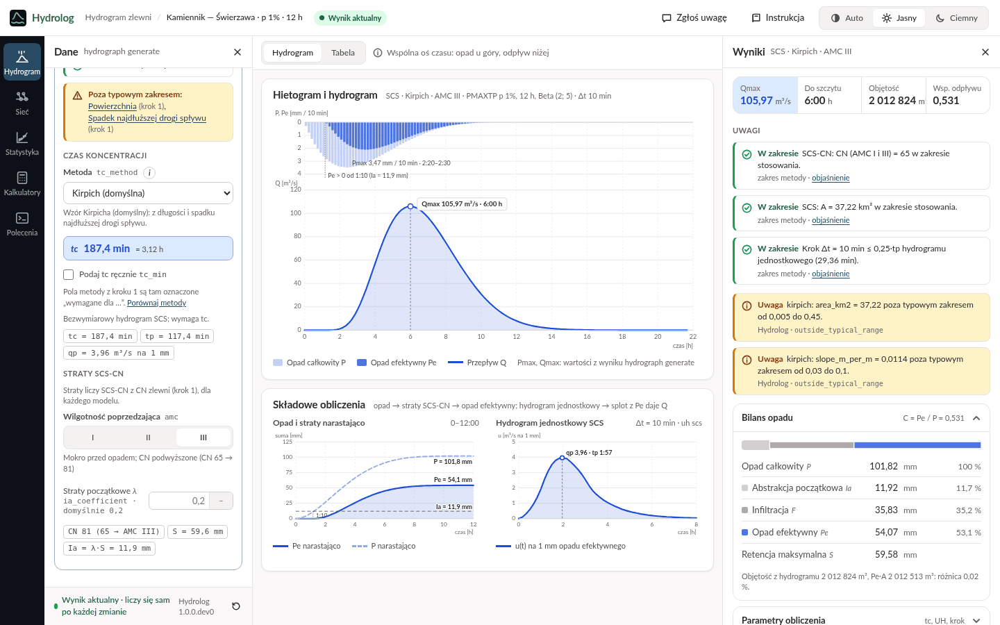
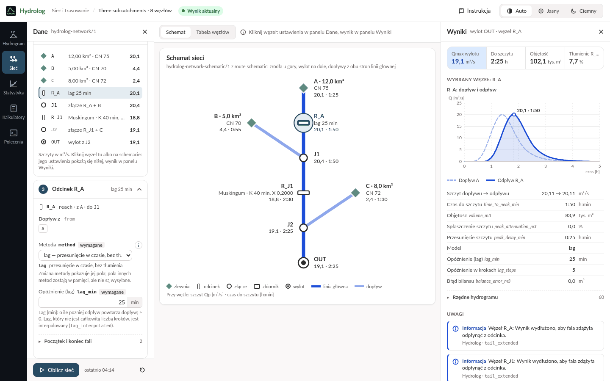
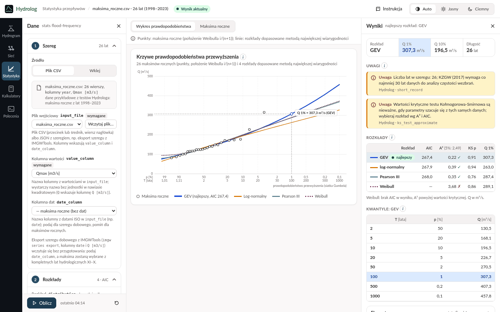
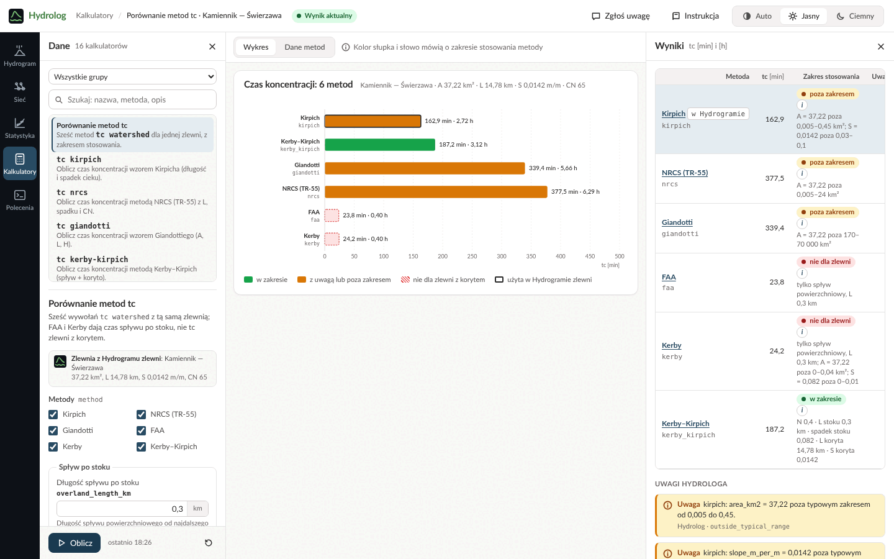
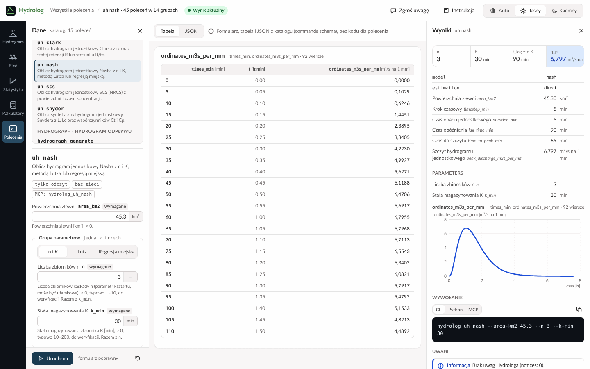
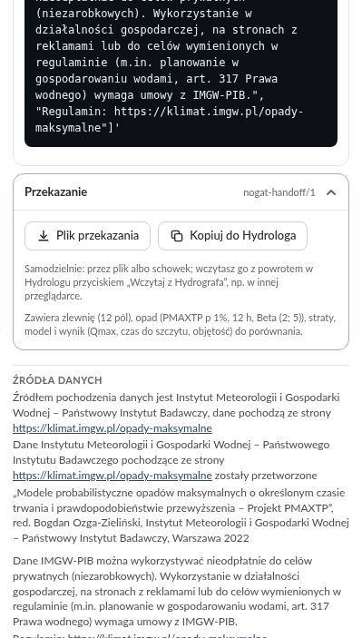
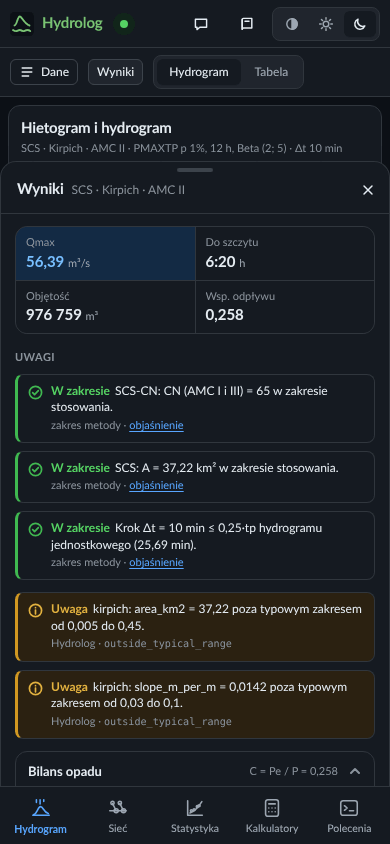

Przewodnik użytkownika
Hydrolog w przeglądarce
Ile wody spłynie po ulewie, jak fala płynie rzeką i jak często zdarzają się duże przepływy: obliczenia hydrologiczne bez instalowania programów i bez znajomości wzorów.
To wersja rozwojowa: wygląd, funkcje i liczby mogą się jeszcze zmieniać.
Na start · bez szczegółów technicznych
Na start
Czym jest Hydrolog?
Hydrolog to kalkulator hydrologiczny w przeglądarce. Szacuje, ile wody spłynie do potoku lub rzeki po silnym deszczu i kiedy będzie jej najwięcej, jak taka fala zmienia się, płynąc dalej korytem i przez zbiorniki, oraz jak często w danej rzece zdarzają się duże przepływy.
Wystarczy przeglądarka na komputerze albo telefonie. Nie trzeba znać wzorów: Hydrolog liczy sam, a przycisk przy polu, metodzie lub uwadze wyjaśnia, co oznacza dana wartość, z jakiego wzoru pochodzi i w jakim zakresie warto go stosować.
Hydrolog nie ma mapy. Z internetu pobiera tylko jedno: wysokość opadu projektowego z atlasu PMAXTP IMGW-PIB dla punktu, który podasz. Liczby opisujące zlewnię (powierzchnię, długości, spadki, CN) wpisujesz albo wczytujesz z pliku, na przykład z Hydrografa, który wyznacza zlewnię na mapie. Każda sekcja jest na początku pusta, bez przykładowych danych; ten przewodnik ma dla każdej sekcji przykład krok po kroku: co wpisać albo wczytać i jaki wynik wyjdzie.
Czego się spodziewać, a czego nie
Hydrolog da Ci
Największy przepływ, czas, po jakim nadejdzie, i objętość wody, która spłynie ze zlewni.
Jak fale z kilku zlewni łączą się, spóźniają i spłaszczają w korytach i zbiornikach.
Przepływ, który w danej rzece zdarza się średnio raz na 10 albo na 100 lat, policzony z pomiarów z wielu lat.
Przy każdym wyniku: dane, uwagi o zakresie stosowania metod i polecenie, które powtórzy obliczenie poza przeglądarką.
Hydrolog nie jest
Nie korzysta z bieżących pomiarów ani prognoz pogody: nie powie, czy rzeka wyleje jutro. Ostrzeżenia hydrologiczne wydaje IMGW-PIB.
Nie pokazuje, które tereny zaleje woda, i nie liczy poziomu wody w rzece. Oficjalne mapy zagrożenia powodziowego publikują Wody Polskie.
Wyniki to szacunki z uproszczonych metod, zależne od danych, które podasz; prawdziwy przepływ może być wyraźnie inny. Do decyzji i projektów potrzebna jest ocena specjalisty.
Nie pobiera danych o terenie ani pomiarów opadów i przepływów: wpisujesz je albo wczytujesz z pliku. Pobiera jedynie wysokość opadu projektowego z atlasu PMAXTP IMGW-PIB.
Na jakie pytania odpowiada?
- Ile wody popłynie potokiem po bardzo silnej ulewie i kiedy będzie jej najwięcej?
- Hydrogram zlewni: przepływ największy, czas do niego i objętość wody.
- Czy wezbranie będzie większe, gdy gleba jest już mokra po wcześniejszych deszczach?
- Hydrogram zlewni, przełącznik wilgotności gleby przed opadem.
- Jak zmieni się odpływ, gdy w zlewni przybędzie zabudowy albo ubędzie lasu?
- Kalkulatory: liczba CN dla gleby i pokrycia terenu; nową wartość wpisujesz w Hydrogramie zlewni.
- Jak szybko woda spływa z najdalszego miejsca zlewni?
- Kalkulatory: czas koncentracji policzony sześcioma metodami.
- Jak zmienia się fala, gdy płynie długim korytem albo przez staw lub zbiornik?
- Sieć i trasowanie.
- Jak duży przepływ zdarza się w tej rzece średnio raz na 100 lat?
- Statystyka przepływów, z największych przepływów kolejnych lat.
Kto może korzystać?
Ile wody i jak szybko spływa po ulewie do potoku, stawu czy mokradła i co w zlewni zmieniają las, łąki, pola i zabudowa.
Wstępny szacunek wody spływającej po ulewie, zanim zleci się dokładne obliczenia.
Metody z podręczników hydrologii na przykładzie prawdziwej zlewni, ze wzorami i źródłami pod przyciskiem .
Szybki pierwszy szacunek oraz wiersz polecenia, który powtórzy obliczenie w skrypcie.
Pierwszy wynik w trzech krokach
- Opisz zlewnię i deszcz
Wybierz „Hydrogram” na pasku sekcji (po lewej, a na telefonie na dole). W kroku „Zlewnia” wpisz zlewnię potoku Kamiennik do Świerzawy: powierzchnia 37,22 km², CN 65, długość najdłuższej drogi spływu 15,88 km i jej spadek 0,0114 m/m. W kroku „Hietogram” zostaw PMAXTP, wpisz punkt ujścia zlewni (szerokość geograficzna 51,01544, długość 15,88984), wybierz p 1% i 12 h, a krok czasowy ustaw na 10 min. Hydrolog sam pobierze z atlasu PMAXTP IMGW-PIB wysokość opadu: 101,82 mm (deszcz, jaki zdarza się średnio raz na 100 lat).
- Wybierz model i przeczytaj wynik
W kroku „Hydrogram” wybierz model SCS: Hydrolog sprawdzi dane i policzy. W panelu „Wyniki”: największy przepływ 54,20 m³/s nadejdzie po 6:40 h od początku deszczu, a z całej ulewy spłynie 977 225 m³ wody. Wykres w środku pokazuje deszcz u góry i odpływ pod nim.
- Zmień jedną rzecz
W kroku „Hydrogram”, w części „Straty SCS-CN”, przełącz wilgotność poprzedzającą z II na III (gleba mokra po wcześniejszych deszczach). Wynik przeliczy się sam: 105,97 m³/s.
Pozostałe pola kroku „Zlewnia” mogą zostać puste: model SCS z czasem koncentracji Kirpicha czyta tylko te cztery liczby, czyli powierzchnię, CN oraz długość i spadek najdłuższej drogi spływu. Pełne dane przykładu są w rozdziale 02. Wysokość opadu to odpowiedź atlasu z listopada 2026: gdy IMGW-PIB zaktualizuje atlas, wysokość i wynik mogą się nieco zmienić. Przycisk „Wyczyść” u dołu panelu „Dane” czyści kroki. Plakietka na górnym pasku mówi, czy wynik jest aktualny; „Instrukcja” obok niej otwiera okno powitalne z odnośnikiem do tego przewodnika. Dalej: rozdział 01.
Słowniczek
- Zlewnia
- Obszar, z którego woda deszczowa spływa do wybranego miejsca na rzece lub potoku. Jej granica, dział wodny, biegnie grzbietami wzniesień.
- Przepływ
- Ilość wody, która w ciągu sekundy płynie przez przekrój rzeki, w metrach sześciennych na sekundę (m³/s); 1 m³ to 1000 litrów.
- Opad projektowy
- Umowny silny deszcz przyjmowany do obliczeń, opisany wysokością (mm), czasem trwania i prawdopodobieństwem, np. taki, który zdarza się średnio raz na 100 lat (p = 1%). W Polsce takie wysokości podaje atlas PMAXTP opracowany przez IMGW-PIB.
- Hietogram
- Wykres opadu w czasie: ile milimetrów deszczu spada w kolejnych odstępach, np. co 10 minut.
- Hydrogram
- Wykres przepływu w czasie: jak po deszczu rośnie i opada ilość wody płynącej w cieku. Jego szczyt to przepływ największy, Qmax.
- CN
- Liczba od 0 do 100 (od ang. curve number) mówiąca, jak łatwo deszcz spływa po terenie zamiast wsiąkać. Zależy od gleby i pokrycia terenu: las ma małą, zabudowa dużą. Im większa, tym więcej wody spływa.
- Czas koncentracji
- Czas, w jakim woda spływa z najdalszego miejsca zlewni do jej wylotu. Im krótszy, tym szybciej rośnie fala.
- Trasowanie fali
- Obliczenie, jak fala wezbraniowa zmienia się, płynąc korytem rzeki albo przez zbiornik. Zwykle przychodzi później i jest niższa, bo część wody chwilowo zatrzymuje się po drodze.
01 · Orientacja
Ekran i wspólne elementy


- Górny pasek
- Znak Hydrologa (powrót do pierwszej sekcji), nazwa sekcji i jej kontekst (np. zlewnia i opad), plakietka stanu wyniku, „Zgłoś uwagę” (zgłoszenie błędu albo pomysłu), „Instrukcja” (okno powitalne z odnośnikiem do tego przewodnika) i motyw: Auto, Jasny, Ciemny.
- Pasek sekcji
- Hydrogram, Sieć, Statystyka, Kalkulatory, Polecenia: po lewej, a na telefonie na dole. Sekcja pamięta swoje dane i ostatni wynik, gdy przechodzisz do innej.
- Panel „Dane”
- Po lewej: formularz, często w ponumerowanych krokach, które można zwinąć. Na dole przycisk obliczenia (w sekcjach, które go mają) i „Wyczyść”, który wraca do stanu pierwszej wizyty: pustych pól, bez przykładu. Pusta sekcja mówi, co wpisać, i prowadzi do swojego przykładu w tym przewodniku.
- Środek
- Wykresy i tabele; nad nimi przełącznik widoku i krótka podpowiedź.
- Panel „Wyniki”
- Po prawej: najważniejsze liczby w kafelkach, uwagi, tabele, eksport i wywołanie.
Plakietka stanu wyniku
- Wynik aktualny wyniki odpowiadają danym w panelu „Dane”.
- Liczenie… Hydrolog liczy wynik dla zmienionych danych.
- Dane zmienione: oblicz ponownie wyniki pokazują poprzednie dane; naciśnij przycisk obliczenia (w Sieci, Statystyce, Kalkulatorach i Poleceniach).
- Dane niepełne popraw pole oznaczone na czerwono; ostatni wynik zostaje na ekranie, oznaczony jako nieaktualny.
- Błąd danych Hydrolog nie policzył wyniku; opis błędu stoi przy polu albo nad formularzem.
Objaśnienia


Przycisk przy polu, metodzie albo uwadze otwiera objaśnienie: co to jest, wzór, zmienne z jednostkami, zakres stosowania i źródła. Zakres stosowania, razem z publikacją, z której pochodzi, podaje Hydrolog; jest porównany z Twoimi danymi i oznaczony „w zakresie” albo „poza zakresem”. Objaśnienie zamyka , klawisz Esc albo kliknięcie obok.
Uwagi, wykresy i wywołanie
- Uwagi w panelu „Wyniki”: komunikaty Hydrologa („Informacja”, „Uwaga”) z ich kodem, także o wartości poza typowym zakresem metody, a w Hydrogramie zlewni przed nimi potwierdzenia, że dane mieszczą się w zakresie stosowania wybranych metod. Komunikat bez polskiego tłumaczenia ma dopisek (EN).
- Wykresy mają odczyt wartości: najedź kursorem albo przejdź do wykresu klawiszem Tab i przesuwaj się strzałkami (Shift lub Page Up/Page Down o dziesięć kroków, Home, End, Esc kończy odczyt).
- Wywołanie to to samo obliczenie poza przeglądarką: wiersz polecenia (CLI), Python albo MCP dla asystentów AI, z przyciskiem kopiowania.
Szerokość paneli
Przeciągnij krawędź panelu, aby go poszerzyć albo zwęzić. Z klawiatury: przejdź do krawędzi klawiszem Tab i użyj strzałek (16 px, z Shift 64 px), Home i End; Enter albo dwuklik przywraca szerokość domyślną. Przeglądarka zapamiętuje szerokości dla wszystkich sekcji. w nagłówku zamyka panel, a przycisk „Dane” lub „Wyniki” nad wykresami otwiera go z powrotem.
02 · Sekcja
Hydrogram zlewni
Jedna zlewnia i jeden deszcz: Hydrolog liczy, jaka część opadu spłynie (metoda SCS-CN), i rozkłada ją w czasie hydrogramem jednostkowym. Wynik to hydrogram odpływu z jego szczytem, czasem do szczytu i objętością. Liczy się sam po każdej zmianie danych: nie ma przycisku obliczenia.


Trzy kroki panelu „Dane”
- Zlewnia. Dane zlewni wpisane ręcznie, z pliku albo z przekazania. „Plik zlewni…” czyta plik JSON zlewni w formacie WatershedParameters (np. z Hydrografa) w przeglądarce, bez wysyłania; wystarczy w nim powierzchnia. „Wczytaj z Hydrografa” wczytuje przekazanie: zlewnię razem z opadem i modelem (Przekazanie). Pole zmienione względem pliku jest oznaczone, a „przywróć” wraca do wartości źródła. Pola, których wybrany model nie czyta, mogą zostać puste; te, które czyta, mają dopisek „wymagane dla …”. Spadki podajesz w m/m, a obok widać je w procentach.
- Hietogram. PMAXTP: podajesz punkt zlewni, np. jej ujście (szerokość i długość geograficzną w stopniach dziesiętnych, WGS84), wybierasz prawdopodobieństwo i czas trwania z tablic atlasu oraz metodę (POT, zalecaną przez IMGW-PIB, albo AMP), a Hydrolog pobiera z atlasu PMAXTP IMGW-PIB wysokość opadu. Wysokości nie wpisuje się: pole „Wysokość opadu” tylko ją pokazuje, a przeglądarka zapamiętuje ją razem z danymi, więc po odświeżeniu strony nie jest pobierana ponownie. Źródłem pochodzenia danych jest Instytut Meteorologii i Gospodarki Wodnej – Państwowy Instytut Badawczy. Hietogram: wysokość i czas trwania podane ręcznie. Własna seria: wysokości opadu w kolejnych krokach, wklejone z arkusza albo wczytane z kolumny pliku CSV. Rozkład deszczu w czasie: blokowy, trójkątny, Beta albo Euler II; krok czasowy (puste pole to 5 min).
- Hydrogram. Model hydrogramu jednostkowego, który rozkłada opad efektywny w czasie: SCS, Nash (parametry metodą Lutza ze zlewni albo podane), Clark albo Snyder. Na początku żaden nie jest wybrany: dopiero wybór modelu uruchamia sprawdzenie danych i obliczenie. Pod wyborem widać tylko pola wybranego modelu: dla SCS i Clarka czas koncentracji (metoda Kirpich, NRCS, Giandotti, FAA, Kerby, Kerby–Kirpich albo czas podany ręcznie, a przy FAA i metodach Kerby’ego ich pola spływu po stoku), dla Nasha metodą Lutza długość do środka ciężkości, szorstkość koryta oraz udział lasów i zabudowy, dla Snydera długość do środka ciężkości i jego współczynniki Ct i Cp (długość cieku L to długość cieku głównego z kroku 1; obie długości Snyder bierze tylko ze zlewni). Na końcu „Straty SCS-CN”, wspólne dla wszystkich modeli: wilgotność poprzedzająca (I sucho, II przeciętnie, III mokro; CN zmienia się wtedy, jak pokazuje podpowiedź) i straty początkowe λ (puste pole to 0,2). „Porównaj metody” otwiera porównanie metod czasu koncentracji w Kalkulatorach.
Po wyborze modelu puste pole, którego model potrzebuje, jest czerwone („Podaj wartość: potrzebna dla metody Kirpicha”) i wstrzymuje obliczenie; tak samo wartość niepoprawna, np. „Najwyżej 100 (podano 150)”, którą widać od razu. Wartość poza typowym zakresem metody jest pomarańczowa, w przykładzie spadek najdłuższej drogi spływu („Poza typowym zakresem od 0,03 do 0,1 (kirpich)”): to uwaga Hydrologa, który podaje zakres metody i jego źródło, a wynik liczy się mimo niej. Pod wyborem modelu podsumowanie wymienia, czego brakuje, co poprawić i co jest poza zakresem, z odnośnikiem do każdego pola. Dopóki dane są niepełne, na ekranie zostaje ostatni wynik, oznaczony jako nieaktualny. Nagłówek kroku streszcza jego ustawienia, np. „SCS · 187,4 min · Kirpich”. Przekazanie wyniku (Przekazanie) wymaga pełnej zlewni: powierzchni, obwodu, długości zlewni oraz wysokości najmniejszej i największej.
Przykład: Kamiennik — Świerzawa
Zlewnia potoku Kamiennik do Świerzawy i deszcz, jaki zdarza się średnio raz na 100 lat. Do pierwszego wyniku wystarczą pola pogrubione; pozostałe przydają się innym metodom i modelom oraz przekazaniu.
| Krok i pole | Wartość |
|---|---|
| 1 · Nazwa | Kamiennik — Świerzawa |
| 1 · Powierzchnia A | 37,22 km² |
| 1 · CN dla AMC II | 65 |
| 1 · Obwód P | 40,89 km |
| 1 · Długość zlewni L | 16,05 km |
| 1 · Wysokość min., maks., średnia | 257,3; 475,1; 363,2 m n.p.m. |
| 1 · Średni spadek zlewni | 0,082 m/m |
| 1 · Długość cieku głównego | 14,78 km |
| 1 · Spadek cieku głównego | 0,0142 m/m |
| 1 · Długość najdłuższej drogi spływu L | 15,88 km |
| 1 · Spadek najdłuższej drogi spływu S | 0,0114 m/m |
| 2 · PMAXTP: punkt (szerokość, długość) | 51,01544; 15,88984 |
| 2 · PMAXTP: p, czas trwania | 1%, 12 h |
| 2 · PMAXTP: metoda; pobrana wysokość opadu | POT; 101,82 mm |
| 2 · Rozkład w czasie | Beta, α i β puste (2 i 5) |
| 2 · Krok czasowy Δt | 10 min |
| 3 · Model, metoda tc, AMC | SCS, Kirpich, II |
| 3 · Nash (Lutz) i Snyder: Lc | 6,76 km |
| 3 · Nash (Lutz): szorstkość koryta, lasy, zabudowa | 0,035; 57,4%; 1% |
| 3 · FAA i Kerby: spływ po stoku L, spadek stoku | 0,3 km; 0,082 m/m |
| 3 · FAA: C; Kerby: N | 0,25; 0,4 |
Punkt to ujście zlewni wyznaczone w Hydrografie. Najdłuższą drogę spływu też wyznaczył Hydrograf (5 listopada 2026): ma 15,88 km od punktu zlewni najdalszego hydraulicznie (zwykle leży na dziale wodnym, ale może na grzbiecie wewnątrz zlewni), na wysokości 440,16 m n.p.m. do ujścia na wysokości 258,72 m n.p.m., więc jej spadek to (440,16 − 258,72) / 15 883 m = 0,0114 m/m. Wynik: Qmax 54,20 m³/s po 6:40 h, objętość 977 225 m³, współczynnik odpływu 0,258 (kafelki opisuje lista poniżej). Z wilgotnością III: 105,97 m³/s. Wysokość 101,82 mm podał atlas w listopadzie 2026; gdy IMGW-PIB go zaktualizuje, wysokość i wynik mogą się nieco zmienić.
Wykresy i wyniki
- Hietogram i hydrogram na wspólnej osi czasu: opad całkowity i efektywny u góry, przepływ pod nimi, ze szczytem opisanym na wykresie. Niżej składowe obliczenia: opad i straty narastająco oraz hydrogram jednostkowy. Widok „Tabela” pokazuje szeregi czasowe, z wyróżnionym wierszem szczytu.
- Kafelki: Qmax, czas do szczytu, objętość i współczynnik odpływu. W przykładzie: 54,20 m³/s, 6:40 h, 977 225 m³ i 0,258, czyli spływa nieco ponad jedna czwarta deszczu.
- Bilans opadu: jak opad dzieli się na straty początkowe, infiltrację i opad efektywny; Parametry obliczenia: czas koncentracji, parametry hydrogramu jednostkowego, krok.
- Przepływ odniesienia: wynik ze Statystyki przepływów („Do porównania”) rysuje się jako pozioma linia na hydrogramie; „Usuń odniesienie” go zdejmuje.
03 · Sekcja
Sieć i trasowanie
Kilka zlewni połączonych korytami, zbiornikami i złączami, aż do jednego wylotu. Hydrolog liczy hydrogram każdej zlewni, przeprowadza fale przez odcinki i zbiorniki i sumuje je w złączach. W przeciwieństwie do Hydrogramu zlewni sieć liczy się na przycisk „Oblicz sieć”.


- Sieć pochodzi z pliku dokumentu sieci (
hydrolog-network/1, „Plik sieci…”) razem z plikami, które czyta („Pliki towarzyszące…”: dopływy, tabele zbiorników), albo z przekazania („Wczytaj z Hydrografa”, zob. Przekazanie). Na początku sekcja jest pusta: nie ma sieci ani schematu. „Zapisz sieć” pobiera dokument ze zmianami. Układ połączeń pochodzi z pliku: zmieniasz parametry węzłów, nie to, co z czym się łączy. - Schemat jest rysowany pionowo: źródła u góry, wylot na dole, linia główna prosto, dopływy z boków. Kliknij węzeł (albo przejdź do niego klawiszem Tab i naciśnij Enter lub spację): jego ustawienia otworzą się w panelu „Dane”, a wynik w panelu „Wyniki”. Te same węzły są na liście w panelu „Dane” i w widoku „Tabela węzłów”.
- Ustawienia węzła zależą od jego rodzaju: zlewnia (powierzchnia, CN, opad), odcinek (metoda: lag, Muskingum, Muskingum-Cunge, kaskada zbiorników albo level-pool, i jej parametry), zbiornik (tabela pojemność–odpływ), złącze, wylot. Po zmianie plakietka mówi „Dane zmienione: oblicz ponownie”, a wyniki są oznaczone jako dotyczące poprzednich danych.
- Wyniki: przy każdym węźle schematu szczyt i czas do szczytu; w panelu „Wyniki” kafelki wylotu, a dla wybranego węzła jego hydrogram (dla odcinka dopływ i odpływ), parametry i rzędne.
Przykład: trzy zlewnie
Pobierz plik przykładu siec.json. W sekcji Sieć naciśnij „Plik sieci…” i wybierz pobrany plik: na schemacie pojawi się osiem węzłów. Sieć nie czyta innych plików, więc „Pliki towarzyszące…” nie są potrzebne.
| Węzeł | Dane |
|---|---|
| A · zlewnia | 12 km², CN 75; własny opad: Euler II, 45 mm w 60 min |
| B · zlewnia | 5 km², CN 70; własny opad: seria co 5 min (0; 2; 5; 10; 12; 6; 3 mm) |
| C · zlewnia | 8 km², CN 72, tc 60 min; opad sieci: blokowy, 30 mm w 60 min |
| R_A · odcinek | z A, metoda lag, 25 min |
| J1 · złącze | R_A i B |
| R_J1 · odcinek | z J1, Muskingum, K 40 min, X 0,2 |
| J2 · złącze, OUT · wylot | R_J1 i C, a dalej wylot |
Naciśnij „Oblicz sieć”. Wynik: wylot OUT ma szczyt 19,1 m³/s po 2:25 h.
Spróbuj: wybierz odcinek R_A, zmień metodę z „lag” na „Muskingum”, wpisz K 30 min i X 0,2, a potem „Oblicz sieć”. Fala spłaszczy się w korycie: szczyt na wylocie spadnie do 18,0 m³/s i nadejdzie po 2:35 h.
04 · Sekcja
Statystyka przepływów
Z największych przepływów kolejnych lat (maksimów rocznych) Hydrolog dopasowuje rozkłady prawdopodobieństwa i podaje przepływy o zadanym okresie powtarzania, np. Q 1%: przepływ, który zdarza się średnio raz na 100 lat. Liczy się na przycisk „Oblicz”.


- Szereg: plik CSV wczytany do sesji („Wczytaj plik…”), z kolumnami odczytanymi z jego nagłówka, albo wartości wklejone („Wklej”). W szeregu dobowym, np. w eksporcie z Obserwatora z kolumnami daty i przepływu, wystarczy wskazać kolumnę dat: Hydrolog sam wybierze maksima z pełnych lat hydrologicznych (od listopada do października). Na początku sekcja jest pusta: nie ma pliku ani wartości.
- Rozkłady: cztery naraz, uporządkowane według kryterium AIC, albo jeden wybrany (log-normalny, GEV, Pearson III, Weibull), metoda estymacji parametrów oraz okresy powtarzania. „Metoda estymacji parametrów” wybiera, jak Hydrolog szacuje parametry rozkładów: największą wiarygodnością (
mle, domyślnie), metodą momentów (moments), L-momentów (l_moments) albo najmniejszych kwadratów (least_squares, która idzie za największymi maksimami); obie tabele i krzywe wykresów liczy ta sama. Rozkład, którego metoda nie umie dopasować, jest pominięty z uwagą, a rozkład, który nie obejmuje któregoś maksimum, nie ma AIC i stoi na końcu tabeli. „Wyróżniony w wynikach” zaczyna od „brak”: bez wyróżnionego okresu nie ma kafelka jego kwantyla, zaznaczonego wiersza tabeli kwantyli ani kwantyla zaznaczonego na wykresie prawdopodobieństwa, a „Do porównania” jest wyłączone. Wybrany okres trafia do kafelków, tabeli, wykresu i „Do porównania”, a wybór jest zapamiętywany. - Wyniki: wykres prawdopodobieństwa przewyższenia na siatce Gumbela (punkty to maksima, linie to rozkłady), pod nim dwa wykresy względem przepływu Q, „Gęstość prawdopodobieństwa” (gęstość każdego rozkładu, maksima roczne jako kreski na osi Q) i „Dystrybuanta” (F = 1 − p każdego rozkładu, maksima jako punkty w położeniu Weibulla), widok „Maksima roczne” z latami, kafelki, uwagi, tabela rozkładów z miarami dopasowania i tabela kwantyli. Wykresy gęstości i dystrybuanty kończą się na większym z dwóch przepływów: największego maksimum i Q 1% aktywnego rozkładu. Po każdym obliczeniu aktywny jest najlepszy rozkład: na wszystkich trzech wykresach jego krzywa jest pełna i gruba, pozostałe są przygaszone, a kafelki podają jego nazwę („Najlepszy”, gdy nim jest) i kwantyle. Kliknięcie wiersza tabeli rozkładów (albo Enter na zaznaczonym wierszu) czyni aktywnym inny rozkład. Pole „W tabeli kwantyli” w każdym wierszu dodaje kolumnę kwantyli tego rozkładu do tabeli kwantyli i do eksportu CSV, w kolejności tabeli rozkładów; po obliczeniu zaznaczony jest tylko najlepszy. Wybór nie jest zapamiętywany: nowy wynik wraca do najlepszego rozkładu.
- „Jednorodność ciągu”, pod tabelą kwantyli, to ten sam szereg sprawdzony poleceniem
stats homogeneity: testy Manna-Whitneya i Kołmogorowa-Smirnowa porównują pierwszą i drugą połowę maksimów, a test Pettitta szuka miejsca zmiany. Tabela podaje dla każdego testu statystykę, p i odpowiedź „Jednorodny”: „tak” albo „nie” (p < 0,05); test, który odrzuca jednorodność, dodaje uwagę. Pod tabelą jest podział szeregu i najbardziej prawdopodobny punkt zmiany według Pettitta: pierwszy rok po zmianie. Lata Hydrolog bierze z dat szeregu dobowego albo z kolumny lat pliku z maksimami; wklejone wartości nie mają lat, więc podział i punkt zmiany są podane jako pozycje w szeregu. Inny rok podziału i poziom istotności przyjmuje poleceniestats homogeneitywe Wszystkich poleceniach. - „Do porównania” przenosi wyróżniony przepływ aktywnego rozkładu do Hydrogramu zlewni, gdzie rysuje się jako linia odniesienia; przy „brak” w „Wyróżniony w wynikach” jest wyłączone.
Przykład: maksima roczne 1998–2023
Największe przepływy kolejnych lat, od 1998 do 2023, w m³/s. W kroku „Szereg” przełącz źródło na „Wklej” i wklej je w pole wartości (skopiuj cały blok):
100,9; 148,6; 130; 140,3; 133,4; 87,2; 170,9; 141,1; 315,4; 126; 177,5; 116,9; 114;
159,6; 102; 94,5; 117,8; 173,6; 148,2; 124,2; 171; 227,6; 81,6; 123,8; 123,8; 116Zostaw cztery rozkłady i domyślne okresy powtarzania, w „Wyróżniony w wynikach” wybierz 100 i naciśnij „Oblicz”. Wynik: najlepszy jest GEV, Q 1% = 307,3 m³/s, Q 10% = 196,5 m³/s, z 26 lat danych. Uwaga przypomina, że wytyczne KZGW (2017) wymagają co najmniej 30 lat.
„Jednorodność ciągu” pokazuje, że żaden z trzech testów nie odrzuca jednorodności tych maksimów: przy każdym jest „tak”.
Inne analizy szeregu (niżówki, trend, jednorodność z własnym rokiem podziału, przepływy charakterystyczne) są w Wszystkich poleceniach, w grupie stats.
05 · Sekcja
Kalkulatory
Szesnaście małych obliczeń w grupach: czas koncentracji, CN i straty, opad, hydrogramy jednostkowe i zlewnia. Lista ma wyszukiwarkę i wybór grupy. Formularze są na początku puste; gdy Hydrogram zlewni ma zlewnię, jej pola wpisują się same. Obliczenie uruchamia przycisk „Oblicz”.


Porównanie metod czasu koncentracji
Hydrolog liczy czas koncentracji zlewni sześcioma metodami i pokazuje, które pasują do niej według ich zakresu stosowania. Kolor słupka i słowo w tabeli mówią „w zakresie”, „poza zakresem” albo „nie dla zlewni”: FAA i Kerby liczą tylko spływ po stoku (setki metrów), a nie spływ zlewni z korytem. Obwiedziony słupek to metoda używana w Hydrogramie zlewni. Kliknij nazwę metody w tabeli i naciśnij „Użyj w Hydrogramie zlewni”, aby tam liczyć tą metodą. Porównanie bierze zlewnię z Hydrogramu zlewni: bez niej nie ma czego porównać.
Przykład. W Hydrogramie zlewni wpisz w kroku „Zlewnia” wszystkie pola z tabeli przykładu w rozdziale 02 (nazwa, powierzchnia, CN, obwód, długość, wysokości, spadki, ciek główny i najdłuższa droga spływu). W Kalkulatorach wybierz „Porównanie metod tc” i w części „Spływ po stoku” wpisz długość 0,3 km, spadek 0,082 m/m, współczynnik C 0,25 i N 0,4 (FAA, Kerby i Kerby–Kirpich), potem „Oblicz”:
| Metoda | tc [min] | Zakres stosowania |
|---|---|---|
| Kirpich | 187,4 | poza zakresem |
| NRCS (NEH 630) | 399,8 | poza zakresem |
| Giandotti | 339,4 | poza zakresem |
| FAA | 23,8 | nie dla zlewni |
| Kerby | 24,2 | nie dla zlewni |
| Kerby–Kirpich | 208,9 | w zakresie |
Pozostałe kalkulatory
Każdy z piętnastu pozostałych to formularz jednego polecenia Hydrologa, np. czasu koncentracji jedną metodą, CN z tablic dla grupy gleby i pokrycia terenu (cn lookup), średniego CN zlewni z kilku pokryć (cn weighted), opadu efektywnego, hietogramu, hydrogramów jednostkowych albo wskaźników kształtu zlewni. Formularz jest na początku pusty; pola, które Hydrolog bierze ze zlewni z Hydrogramu zlewni, wpisują się same (przycisk „Wypełnij” wpisuje je ponownie). Pod wynikiem jest wywołanie, które daje ten sam wynik w wierszu poleceń.
Przykład. Wybierz z listy cn lookup (CN z tablic), grupę gleby B i pokrycie terenu forest (las), potem „Oblicz”. Wynik: CN = 60 (dla lasu w stanie przeciętnym).
06 · Sekcja
Wszystkie polecenia
Wszystkie obliczenia Hydrologa dostępne w przeglądarce: te same polecenia, które ma program w wierszu poleceń (hydrolog), pogrupowane i z wyszukiwarką. Formularz każdego polecenia powstaje z jego opisu w katalogu Hydrologa, więc zawsze odpowiada temu, co polecenie przyjmuje.


uh nash z przykładem z tego rozdziału po „Uruchom”.- Lista: wybierz grupę albo wpisz w wyszukiwarkę nazwę, metodę lub słowo z opisu (wielkość liter i polskie znaki nie mają znaczenia). Wybrane polecenie trafia do adresu strony, więc odnośnik do niego można zapisać.
- Formularz: pola wymagane mają znacznik „wymagane”, liczby mają jednostki i dozwolone zakresy, a wybór z kilku wartości pokazuje znaczenie wybranej. Gdy polecenie przyjmuje dane na kilka sposobów, przełącznik „Grupa parametrów” pozwala wybrać jeden. Na początku żadne polecenie nie jest wybrane, a formularz wybranego jest pusty (wpisana jest tylko nazwa pliku, który polecenie musi zapisać).
- Pliki: polecenie, które czyta plik, przyjmuje plik wczytany do sesji („Wczytaj plik…”); polecenie, które zapisuje plik, pokazuje go w wynikach do pobrania.
- „Uruchom” liczy; wynik to kafelki, parametry, szeregi jako tabela i wykres oraz cały dokument JSON, a pod nimi wywołanie dla wiersza poleceń, Pythona i MCP.
Przykład: hydrogram jednostkowy Nasha
Wybierz z listy uh nash (grupa uh). Zostaw grupę parametrów „n i K”, wpisz powierzchnię 45,3 km², n 3 i K 30 min; krok czasowy może zostać pusty (domyślnie 5 min). Naciśnij „Uruchom”. Wynik: n 3, K 30 min, czas opóźnienia 90 min i szczyt hydrogramu jednostkowego 6,797 m³/s na 1 mm.
07 · Wyniki poza Hydrologiem
Eksport i przekazanie wyników
Część „Eksport” w panelu „Wyniki” zapisuje bieżący wynik na Twoim komputerze. Jest zwinięta: rozwijasz ją, klikając jej nagłówek (tak samo „Przekazanie” w Hydrogramie zlewni i w Sieci).


- CSV · Tabela
- Szeregi wyniku w arkuszu kalkulacyjnym (przecinek jako separator, kropka dziesiętna, UTF-8). Hydrogram zlewni zapisuje kolumny
time_min,discharge_m3s,precipitation_mm,effective_precipitation_mm, które czytają polecenia trasowania Hydrologa i Hydraulik. Sieć zapisuje jeden węzeł albo wszystkie węzły. - JSON · Wynik
- Cały wynik tak, jak go zwrócił Hydrolog; Sieć zapisuje też dokument sieci.
- PNG · Wykres
- Widoczny wykres jako obraz; w Sieci schemat. Sieć zapisuje też schemat Hydrologa jako SVG.
- MD · Raport
- Hydrogram zlewni: raport obliczeniowy w Markdown, pliku tekstowym z nagłówkami i tabelami, który otworzy każdy edytor tekstu. Hydrolog pisze go poleceniem
report generatez danymi i ustawieniami pokazanego wyniku, a przeglądarka pobiera plik. - PDF · Raport do druku
- Hydrogram zlewni i Sieć: okno drukowania przeglądarki z sekcją ułożoną na kartkach A4: wykresy, wyniki, uwagi i wywołanie, a na końcu dane z ich pochodzeniem; bez przycisków, w jasnym motywie i ze wszystkimi częściami rozwiniętymi. Plik PDF zapiszesz w tym oknie, wybierając „Zapisz jako PDF”. Zwykłe drukowanie strony (Ctrl+P) daje ten sam widok.
- Wywołanie
- Wiersz polecenia (CLI), kod Pythona albo wywołanie MCP, które powtórzą obliczenie poza przeglądarką.
Przekazanie: Hydrograf i Hydrolog
Hydrograf wyznacza zlewnię na mapie, a Hydrolog liczy dla niej wezbranie. Dane przechodzą między nimi jako przekazanie: plik JSON w formacie nogat-handoff/1 ekosystemu Nogat. Niesie zlewnię albo całą sieć, pochodzenie danych (np. opad PMAXTP p 1% w 12 h z punktem, dla którego pobrano wysokość, plik zlewni albo punkt na mapie) i wynik do porównania.
- Wysyłanie. Część „Przekazanie” na końcu panelu „Wyniki” w Hydrogramie zlewni i w Sieci: „Plik przekazania” pobiera plik
<nazwa>.handoff.json, a „Do schowka” kopiuje to samo do schowka. Z Hydrogramu zlewni idzie zlewnia z opadem, stratami, modelem i wynikiem, z Sieci cała sieć, a po „Oblicz sieć” także wynik wylotu. - Wczytywanie. „Wczytaj z Hydrografa” w pierwszym kroku panelu „Dane” (w Hydrogramie zlewni krok „Zlewnia”, w Sieci krok „Sieć”), a w nim „Plik przekazania…” albo „Wklej ze schowka”. Gdy przeglądarka nie daje dostępu do schowka, pojawia się pole, w które wklejasz przekazanie (Ctrl+V). Jedna zlewnia, z opadem albo bez, otwiera się w Hydrogramie zlewni, każda inna sieć w Sieci i trasowaniu. Karta w panelu „Dane” mówi, skąd są dane, np. „Z Hydrografa: zlewnia punktu 51,0154° N, 15,8900° E”. Opad PMAXTP otwiera się z punktem opadu, a bez niego z punktem zlewni: gdy przekazanie podaje punkt opadu, jego wysokość zostaje taka, jak w przekazaniu; w przeciwnym razie Hydrolog pobiera wysokość dla punktu zlewni. Przekazanie bez żadnego punktu otwiera opad jako „Hietogram” z wysokością i czasem trwania z przekazania. Sama zlewnia, bez opadu (tak Hydrograf przekazuje zlewnię, zanim policzy hydrogram), otwiera się z opadem PMAXTP w punkcie zlewni i bez modelu: wybierz prawdopodobieństwo i czas trwania w kroku „Hietogram”, a Hydrolog pobierze wysokość opadu, i model w kroku „Hydrogram”. Bez punktu zlewni krok „Hietogram” zostaje pusty.
- Porównanie. Gdy przekazanie niesie wynik, część „Przekazanie” rozwija się sama i stawia go obok wyniku Hydrologa: Qmax, czas do szczytu, objętość i wersję programu, który liczył. Wartości, które się różnią, są wyróżnione; zwykle to skutek innej wersji Hydrologa, której używa Hydrograf. Po zmianie danych porównanie przypomina, że wynik producenta dotyczy danych z przekazania. W Sieci wynik Hydrologa do porównania daje „Oblicz sieć”.
Przed wczytaniem Hydrolog sprawdza przekazanie. Gdy coś się nie zgadza, niczego nie zmienia i wypisuje przyczyny (zob. Gdy coś nie działa).
W Hydrografie przekazanie kopiuje przycisk „Kopiuj do Hydrologa” w panelu „Zlewnia” (od wydania Hydrografa następnego po v0.5.0); tutaj wklejasz je przez „Wczytaj z Hydrografa” → „Wklej ze schowka”. „Plik przekazania” obok zapisuje to samo jako plik, który wczytasz przez „Plik przekazania…”. Zanim Hydrograf policzy hydrogram, przekazuje samą zlewnię, bez opadu i wyniku; potem także opad, model i wynik do porównania. Hydrograf nie wczytuje przekazań: przekazanie z Hydrologa wczytasz z powrotem w Hydrologu, np. w innej przeglądarce albo na innym komputerze.
08 · Wygląd i dane
Telefon, motyw i Twoje dane


Telefon i wąski ekran
Do szerokości 860 px sekcje są na pasku u dołu ekranu, a panele „Dane” i „Wyniki” wysuwają się od dołu jako arkusze: otwierają je przyciski nad wykresem, zamyka albo Esc.
Motyw
Przełącznik na górnym pasku: Auto (jak w systemie), Jasny albo Ciemny. Wybór obowiązuje też w tym przewodniku i na innych stronach ekosystemu Nogat pod tym samym adresem.
Twoje dane
- Dane wpisane w formularzach zostają w tej przeglądarce, osobno dla każdej sekcji, aż do „Wyczyść”; w Hydrogramie zlewni także pobrana wysokość opadu PMAXTP. Wyniki nie są zapisywane: po ponownym otwarciu strony Hydrogram zlewni liczy wynik od nowa, a w pozostałych sekcjach wystarczy nacisnąć przycisk obliczenia.
- Pliki, które wczytujesz, trafiają do katalogu Twojej sesji na serwerze Hydrologa i są usuwane po 12 godzinach bez aktywności albo po zatrzymaniu serwera. Limity: 20 MB na plik, 100 MB i 200 plików na sesję.
- Hydrolog nie ma kont ani logowania. Poza swój serwer wysyła tylko punkt opadu PMAXTP (szerokość i długość geograficzną) z metodą atlasu do IMGW-PIB, gdy pobiera wysokość opadu; innych danych nie wysyła.
- Zgłoszenie z „Zgłoś uwagę” zostaje na serwerze Hydrologa razem z adresem strony i nazwą przeglądarki, a dane diagnostyczne tylko wtedy, gdy pole „Dołącz dane diagnostyczne” jest zaznaczone. Nie ma w nich treści Twoich plików; „Pokaż co zostanie wysłane” pokazuje je przed wysłaniem.
09 · Pomoc
Gdy coś nie działa
- „Dane niepełne: …”
- Pole o tej nazwie jest puste albo ma wartość spoza zakresu; jest oznaczone na czerwono, a pod nim widać, co jest nie tak. Wynik na ekranie dotyczy poprzednich danych.
- „Błąd danych”
- Hydrolog odrzucił dane jako całość, np. gdy długość do środka ciężkości zlewni jest większa od długości cieku. Komunikat stoi nad formularzem albo przy polu.
- Obliczenie przerwane
- Obliczenie dłuższe niż 30 sekund jest przerywane. Zmniejsz zadanie, np. wydłuż krok czasowy albo skróć szereg.
- „Nie pobrano wysokości opadu PMAXTP”
- Punkt poza atlasem (poza Polską albo na morzu) jest oznaczony przy szerokości geograficznej: popraw punkt. Gdy IMGW-PIB nie odpowiada, komunikat stoi przy wysokości opadu: sprawdź połączenie z internetem i naciśnij „Pobierz ponownie”. Wynik na ekranie dotyczy poprzednich danych.
- Komunikat z dopiskiem (EN)
- Hydrolog nie ma jeszcze jego polskiej wersji; treść jest po angielsku.
- Plik nie wczytuje się
- Sprawdź rozmiar (najwyżej 20 MB) i format: CSV z wierszem nagłówka, przecinkiem albo średnikiem jako separatorem, albo JSON.
- „Nie wczytano przekazania”
- Plik albo tekst ze schowka nie jest poprawnym przekazaniem
nogat-handoff/1. Lista pod przyciskiem mówi, co i gdzie się nie zgadza, np. nieznane pole albo wartość spoza zakresu; dane sekcji się nie zmieniły. Sam plik zlewni wczytaj przyciskiem „Plik zlewni…”, a dokument sieci przyciskiem „Plik sieci…”. - Chcesz zacząć od nowa
- „Wyczyść” u dołu panelu „Dane” wraca do stanu pierwszej wizyty: pustej sekcji. Przykłady do wpisania są w rozdziałach sekcji tego przewodnika.
- Coś działa źle albo masz pomysł
- „Zgłoś uwagę” na górnym pasku: opisz, co się stało, i naciśnij „Wyślij”. Zgłoszenie trafia do osoby, która prowadzi serwer Hydrologa. Zaznaczone pole „Dołącz dane diagnostyczne” dołącza ostatnie akcje w aplikacji, błędy i dane otwartej sekcji, które pomagają odtworzyć problem.
10 · Dla administratora
Uruchomienie u siebie
Hydrolog to program w Pythonie. Po instalacji z dodatkiem gui (polecenia instalacji są w README projektu) serwer uruchamia się poleceniem:
hydrolog gui serveStrona otwiera się w przeglądarce pod adresem 127.0.0.1:8070; --port zmienia port, --no-browser nie otwiera przeglądarki, a Ctrl+C zatrzymuje serwer. Hydrolog nie ma logowania: kto dotrze do serwera, może z niego korzystać. Udostępniaj go poza własnym komputerem tylko za serwerem pośredniczącym, który wymaga logowania, np. Cloudflare Access. Wysokość opadu PMAXTP pobiera serwer (przez Obserwatora, z API danych publicznych IMGW-PIB), więc potrzebuje on dostępu do internetu; bez niego pozostałe obliczenia działają, a PMAXTP zgłasza brak połączenia.
Zgłoszenia z „Zgłoś uwagę” zapisują się w pliku SQLite feedback.sqlite3 w katalogu danych (~/.local/share/nogat/hydrolog/ albo hydrolog/ w katalogu z HYDROLOG_DATA_DIR). Czyta je strona admin/ pod adresem Hydrologa, po podaniu klucza ustawionego w zmiennej HYDROLOG_ADMIN_API_KEY (albo w pliku, który wskazuje HYDROLOG_ADMIN_API_KEY_FILE); bez klucza strona administracyjna nikogo nie wpuszcza. Kopię zapasową zrobisz w trakcie pracy serwera:
sqlite3 feedback.sqlite3 ".backup kopia.sqlite3"